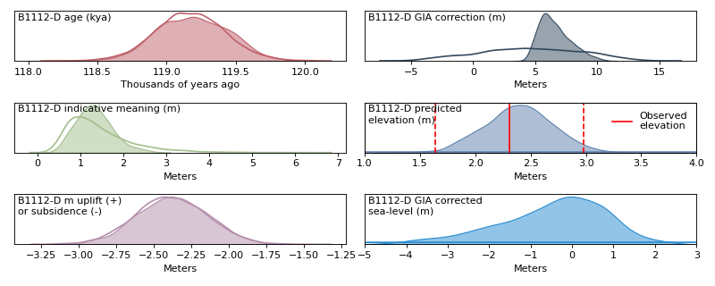

Determining paleo-sea level¶
This package provides adaptable and general tools to solve for GIA-corrected paleo-sea level during the last interglacial.
Basic workflow¶
Fill out a
datatable according to the data formatting specificationsPre-process your data for model construction with
load_data()from lig_sea_level.inference import load_data data = load_data('path_to_data_table.csv')
Build a
pymc.model.Modelmodel withget_model(data)from lig_sea_level.model import get_model model, gaussian_processes = get_model(data)
Sample the model posterior using cutting edge JAX assisted gradient-based MCMC algorithms.
import pymc as pm from pymc import sampling_jax import arviz as az with model: prior = pm.sample_prior_predictive() full_trace = sampling_jax.sample_numpyro_nuts() posterior_predictive = pm.sample_posterior_predictive(full_trace) # combine traces full_trace.extend(prior) full_trace.extend(posterior_predictive)
Plot and analyze the results with the
lig_sea_level.plottinglibrary.from lig_sea_level import plotting plotting.sample(data,full_trace,'sample_name')
(Source code, png, hires.png, pdf)

{kind=link}
{kind=link}
Table of contents¶
Installation¶
PIP (planned)¶
pip install lig_sea_level
Latest (unstable)¶
pip install git+https://github.com/blakedyer/lig_sea_level